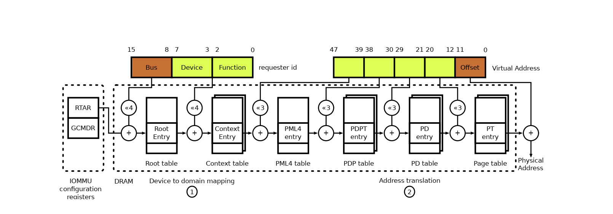
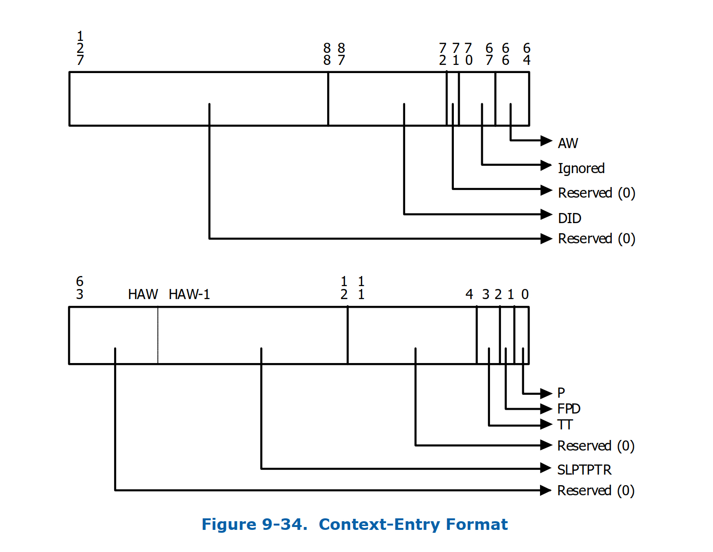
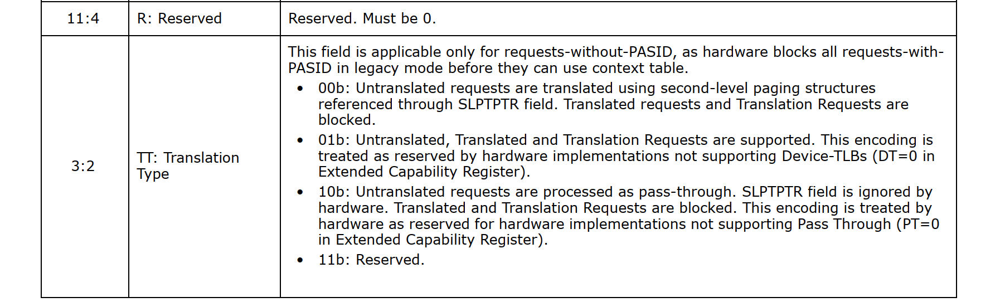

序言
上一篇文章主要写了一下iommu硬件架构以及其在驱动层的初始化流程，那这一篇我们会花点时间来详细介绍一下iommu分别在虚拟化和非虚拟化场景下 dma remapping的工作原理
非虚拟化场景
在非虚拟化场景下如果不是显示的在cmdline里面把iommu设置为disabled则一般都会默认enable iommu硬件，另外还有一种常用的方式就是iommu=pt这种方式跟default设置的唯一区别是会不会提前建立static map。为了让大家有个更清晰的认知，我们在内核里面找段dma操作相关的代码并以此为开端对iommu的dma工作机制进行剖析。
static int e100_xmit_prepare(struct nic *nic, struct cb *cb,
struct sk_buff *skb)
{
dma_addr_t dma_addr;
cb->command = nic->tx_command;
dma_addr = pci_map_single(nic->pdev,
skb->data, skb->len, PCI_DMA_TODEVICE);
/* If we can't map the skb, have the upper layer try later */
if (pci_dma_mapping_error(nic->pdev, dma_addr)) {
dev_kfree_skb_any(skb);
skb = NULL;
return -ENOMEM;
}
.........
}
上面的代码片断是摘至于内核e100网卡驱动，核心逻辑就是先把skb的地址做一下dma map，然后让硬件可以直接dma这段数据，其中使用的pci_map_single这个函数最终会调到
static inline dma_addr_t dma_map_single_attrs(struct device *dev, void *ptr,
size_t size,
enum dma_data_direction dir,
unsigned long attrs)
{
struct dma_map_ops *ops = get_dma_ops(dev);
dma_addr_t addr;
kmemcheck_mark_initialized(ptr, size);
BUG_ON(!valid_dma_direction(dir));
addr = ops->map_page(dev, virt_to_page(ptr),
offset_in_page(ptr), size,
dir, attrs);
debug_dma_map_page(dev, virt_to_page(ptr),
offset_in_page(ptr), size,
dir, addr, true);
return addr;
}
如果有iommu硬件的情况下(以intel iommu为例)他最终为走到intel_map_page，下面我们来看一下这个函数的核心逻辑
static dma_addr_t __intel_map_single(struct device *dev, phys_addr_t paddr,
size_t size, int dir, u64 dma_mask)
{
struct dmar_domain *domain;
phys_addr_t start_paddr;
unsigned long iova_pfn;
int prot = 0;
int ret;
struct intel_iommu *iommu;
unsigned long paddr_pfn = paddr >> PAGE_SHIFT;
BUG_ON(dir == DMA_NONE);
if (iommu_no_mapping(dev))
return paddr;
domain = get_valid_domain_for_dev(dev);
if (!domain)
return 0;
iommu = domain_get_iommu(domain);
size = aligned_nrpages(paddr, size);
iova_pfn = intel_alloc_iova(dev, domain, dma_to_mm_pfn(size), dma_mask);
if (!iova_pfn)
goto error;
/*
* Check if DMAR supports zero-length reads on write only
* mappings..
*/
if (dir == DMA_TO_DEVICE || dir == DMA_BIDIRECTIONAL || \
!cap_zlr(iommu->cap))
prot |= DMA_PTE_READ;
if (dir == DMA_FROM_DEVICE || dir == DMA_BIDIRECTIONAL)
prot |= DMA_PTE_WRITE;
/*
* paddr - (paddr + size) might be partial page, we should map the whole
* page. Note: if two part of one page are separately mapped, we
* might have two guest_addr mapping to the same host paddr, but this
* is not a big problem
*/
ret = domain_pfn_mapping(domain, mm_to_dma_pfn(iova_pfn),
mm_to_dma_pfn(paddr_pfn), size, prot);
if (ret)
goto error;
/* it's a non-present to present mapping. Only flush if caching mode */
if (cap_caching_mode(iommu->cap))
iommu_flush_iotlb_psi(iommu, domain,
mm_to_dma_pfn(iova_pfn),
size, 0, 1);
else
iommu_flush_write_buffer(iommu);
start_paddr = (phys_addr_t)iova_pfn << PAGE_SHIFT;
start_paddr += paddr & ~PAGE_MASK;
return start_paddr;
error:
if (iova_pfn)
free_iova_fast(&domain->iovad, iova_pfn, dma_to_mm_pfn(size));
pr_err("Device %s request: %zx@%llx dir %d --- failed\n",
dev_name(dev), size, (unsigned long long)paddr, dir);
return 0;
}
我们来好好走读一下这个函数，首先会判断是否为iommu_no_mapping，如果是则直接返回paddr也即物理地址。再来看看iommu_no_mapping这个函数的具体逻辑。
static int iommu_no_mapping(struct device *dev)
{
int found;
if (iommu_dummy(dev))
return 1;
if (!iommu_identity_mapping)
return 0;
found = identity_mapping(dev);
if (found) {
if (iommu_should_identity_map(dev, 0))
return 1;
else {
/*
* 32 bit DMA is removed from si_domain and fall back
* to non-identity mapping.
*/
dmar_remove_one_dev_info(si_domain, dev);
pr_info("32bit %s uses non-identity mapping\n",
dev_name(dev));
return 0;
}
} else {
/*
* In case of a detached 64 bit DMA device from vm, the device
* is put into si_domain for identity mapping.
*/
if (iommu_should_identity_map(dev, 0)) {
int ret;
ret = domain_add_dev_info(si_domain, dev);
if (!ret) {
pr_info("64bit %s uses identity mapping\n",
dev_name(dev));
return 1;
}
}
}
return 0;
}
从实现来看，首先会判断iommu_identity_mapping是否为空(如果大家读过上一篇文章应该知道当iommu=pt的时候这个变量是不会为空的)如果为空则返回false，这里我先看一下不为空的逻辑。接着函数走到identity_mapping，这个函数的实现具体如下：
static int identity_mapping(struct device *dev)
{
struct device_domain_info *info;
if (likely(!iommu_identity_mapping))
return 0;
info = dev->archdata.iommu;
if (info && info != DUMMY_DEVICE_DOMAIN_INFO)
return (info->domain == si_domain);
return 0;
}
可以看到函数里面首先判断iommu_identity_mapping是否为空，那么在iommut=pt的情况下这个是不为空的，然后判断设备的domain是否为si_domain，当然这个答案也是肯定的。因此这个函数返回值为true，接着函数走到iommu_should_identity_map(dev, 0)，那么这个函数主要的判断如下：
- 如果这个设备不是pci设备且这个设备有RMRR，则这返回False.
- 如果这个设备是pci设备，则下面几种情况会返回False：
- 这个pci设备有rmrr
iommu_identity_mapping的值不是IDENTMAP_ALL- 是pci设备但不是pcie设备，则如果设备不是 root bus 或者说pci设备的种类是pci bridge
- 是pcie设备且pcie 设备是pcie bridge
- 如果这个设备是32bit的设备则返回false
如果这个函数返回false则需要从si_domain里面把这个设备的mapping删除掉，如果返回True则直接返回物理地址。所以总结一下在iommu=pt的场景下，由于静态映射的存在所以直接返回paddr。为什么能够直接返回物理地址而不是iova呢？这里我们再详细的介绍一下，我们先来看一下si_domain的初始化：
static int __init si_domain_init(int hw)
{
int nid, ret = 0;
si_domain = alloc_domain(DOMAIN_FLAG_STATIC_IDENTITY);
if (!si_domain)
return -EFAULT;
if (md_domain_init(si_domain, DEFAULT_DOMAIN_ADDRESS_WIDTH)) {
domain_exit(si_domain);
return -EFAULT;
}
pr_debug("Identity mapping domain allocated\n");
//如果hw为true,则直接返回
if (hw)
return 0;
for_each_online_node(nid) {
unsigned long start_pfn, end_pfn;
int i;
for_each_mem_pfn_range(i, nid, &start_pfn, &end_pfn, NULL) {
ret = iommu_domain_identity_map(si_domain,
PFN_PHYS(start_pfn), PFN_PHYS(end_pfn));
if (ret)
return ret;
}
}
return 0;
}
首先，hw这个参数输入为hw_pass_through，它指的是iommu硬件上是否支持paas through翻译模式即iova就是真实的物理地址不需要再走一遍从iova转换到hpa的流程。那么从上面的函数实现也能看到如果hw为true则si_domain不会再去做相关内存mapping(关于hw为false的情况后面我们再分析），也就是说如果iommu硬件支持hw且iommu配置了pt则这种场景下硬件的DMA到达iommu之后不需要走页表翻译直接跟memory controller进行交互就可以了。但是大家再仔细想一下iommu硬件是如何知道哪些设备的dma要走页表进行转换，哪些设备的dma不需要进行地址转换呢？ 为了更好的解释这个问题，我们先来回忆一下dma的页表是如何确定的

从上面这张图我们可以看到一个设备的iova页表首先是通过bus号在root table里面找到相应的root_entry，然后再通过devfn在context table里面找到对应的context_entry，然后才能找到真正的页表。从vt-d的spec来看，contex_entry的format里面有一个标志位(TT)来表明这个设备的DMA是否是paasthroug，具体如下:

我们再来看一下对图2中相关字段的详细描述：

从图3中可以看到TT这个字段为10b时表示这个dma是不需要进行页表转换的，所以iommu就是通过这个字段来进行区分是否要通过页表进行转换的。但是还有一个问题是这个TT为paasthrough的translation type是什么时候设置的？回答这个问题，我们还是需要回归到内核相关代码当中。目前我们条件是hw为true，且iommu=pt的情况，我们还是回到intel_iommu_init的这个函数当中
if (iommu_identity_mapping) {
ret = iommu_prepare_static_identity_mapping(hw_pass_through);
if (ret) {
pr_crit("Failed to setup IOMMU pass-through\n");
goto free_iommu;
}
}
上面这个函数片断截取自init_dmars这个函数，其核心函数为iommu_prepare_static_identity_mapping，它最终会调到domain_add_dev_info 这个函数并最终走到domain_context_mapping_one
static int domain_context_mapping_one(struct dmar_domain *domain,
struct intel_iommu *iommu,
u8 bus, u8 devfn)
{
......
//设置translation type 为 paas through
if (hw_pass_through && domain_type_is_si(domain))
translation = CONTEXT_TT_PASS_THROUGH;
......
//获取这个设备在contex table表里面的地址
context = iommu_context_addr(iommu, bus, devfn, 1);
if (!context)
goto out_unlock;
ret = 0;
if (context_present(context))
goto out_unlock;
pgd = domain->pgd; //iova页表基址
context_clear_entry(context);
context_set_domain_id(context, did);
.......
//下面函数可以看出如果是在paas through模式下不会设置iova页表地址
if (translation != CONTEXT_TT_PASS_THROUGH) {
for (agaw = domain->agaw; agaw != iommu->agaw; agaw--) {
ret = -ENOMEM;
pgd = phys_to_virt(dma_pte_addr(pgd));
if (!dma_pte_present(pgd))
goto out_unlock;
}
info = iommu_support_dev_iotlb(domain, iommu, bus, devfn);
if (info && info->ats_supported)
translation = CONTEXT_TT_DEV_IOTLB;
else
translation = CONTEXT_TT_MULTI_LEVEL;
//非paas through模式下需要设置iova页表的基地址
context_set_address_root(context, virt_to_phys(pgd));
context_set_address_width(context, iommu->agaw);
} else {
/*
* In pass through mode, AW must be programmed to
* indicate the largest AGAW value supported by
* hardware. And ASR is ignored by hardware.
*/
context_set_address_width(context, iommu->msagaw);
}
// 设置转换类型
context_set_translation_type(context, translation)
}
看完之后大家应该有个比较清晰的理解，上面主要理了一下在iommu=pt，hw为true的情况；如果hw为false的情况又会怎么样了？具体的逻辑还是要从init_dmars这个函数开始看起，通过分析可以看到因为hw=false也就是说iommu硬件不支持paas through 的translation type，所以必须要是创建页表的，但是因为是静态映射即iova就等于hpa，所以在这种情况下也是可以直接返回paddr的，但是效率肯定是没法跟hw=true相比的。
聊完iommu=pt的各种情况之后，我们再看一下iommu为默认设置的情况下设备是如何进行dma操作的。 还是先要从intel_iommu_init这个函数里面的init_dmars看起，从这相关的逻辑来看区别在于不会提前创建si_domain(即提前做好iova的映射)，那它是在什么时候创建的呢？答案是在dma_map的时候而且dma map相关的api返回的iova，如果大家感兴趣可以去仔细读一下__intel_map_single这个函数，部分核心逻辑如下：
//如果dev没有创建domain则重新创建，同时将其加入到contex table里面
domain = get_valid_domain_for_dev(dev);
if (!domain)
return 0;
iommu = domain_get_iommu(domain);
size = aligned_nrpages(paddr, size);
//分配iova
iova_pfn = intel_alloc_iova(dev, domain, dma_to_mm_pfn(size), dma_mask);
if (!iova_pfn)
goto error;
虚拟化场景
iommu在虚拟化场景扮演着非常重要的作用，尤其是在设备直通的场景。大家都知道在虚拟机里面是没有iommu的，guest 里面的所有的dma_ops走的都是noiommu(当然之前也有人在推viommu的方案)，所以当你在guest里面使用dma_map这种类似的api的时候，其返回的都是gpa。这样问题就来了，你想想如果虚拟机使用的是virtio-net or virtio-blk这种完全模拟的设备还好，因为其本质都还是共享内存还是在mmu层做转换。但是在直通设备的场景下，它就是跟真的外设打交道，而外设是无法直接dma gpa的，它必然要做一层转换。接下来我们就来分析一下虚拟化场景下iommu是如何工作的。
首先，如果你要在虚拟机场景下做设备直通那我们经常会在kernel cmdline里面做iommu=pt, intel_iommu=on(当然也可以是amd, arm)。然后把vf或者pf从原来的驱动unbind掉，然后bind到vfio_pci，接着在启动虚拟机的时候我们需要对设备在vfio层面进行相关的初始化，然后并对guest所有的内存做vfio_dma_map。iommu=pt这个由于前面已经分析过了，这里我就不再细讲，我们看一下把vf或者pf从原来的驱动unbind的过程中跟iommu相关的哪些：
static int device_notifier(struct notifier_block *nb,
unsigned long action, void *data)
{
struct device *dev = data;
struct dmar_domain *domain;
if (iommu_dummy(dev))
return 0;
if (action != BUS_NOTIFY_REMOVED_DEVICE)
return 0;
domain = find_domain(dev);
if (!domain)
return 0;
dmar_remove_one_dev_info(domain, dev);
if (!domain_type_is_vm_or_si(domain) && list_empty(&domain->devices))
domain_exit(domain);
return 0;
}
static struct notifier_block device_nb = {
.notifier_call = device_notifier,
};
这个是比较核心的地方，从上面的逻辑可以看出设备从其原来的driver unbind的时候会如果这个设备已经有了相关的dmar_domain比如之前说的在pt的场景下会提前创建好静态mapping si_domain，那么这时候会把设备从si_domain移除。
然后再看把设备bind到vfio-pci driver的时候发生了什么事情呢？最终其会调到vfio_pci_probe这个函数里面，其核心的逻辑具体如下：
vfio_iommu_group_get
这个函数主要是判断这个设备是否属于某个iommu_group，如果没有则报错。
vfio_add_group_dev
这个函数首先从该设备所属的iommu_group找到相应的vfio_group，如果找不到则会为这个iommu_group创建vfio_group；然后再把这个dev跟vfio_device关联起来，同时为这个vfio_dev绑定vfio_device_ops
static const struct vfio_device_ops vfio_pci_ops = {
.name = "vfio-pci",
.open = vfio_pci_open,
.release = vfio_pci_release,
.ioctl = vfio_pci_ioctl,
.read = vfio_pci_read,
.write = vfio_pci_write,
.mmap = vfio_pci_mmap,
.request = vfio_pci_request,
};
上面我们主要是聊了一下设备直通之前的一些准备工作，下面我们看一下qemu侧直通设备vfio相关的操作，为了让大家更的好理解我们举个例子，假设我们要把pci device 0000:06:0d.0 直通给vm，则看一下相关的信息：
readlink /sys/bus/pci/devices/0000:06:0d.0/iommu_group
../../../../kernel/iommu_groups/26
然后我们来看一下qemu侧vfio设备的初始操作函数vfio_realize，相关的逻辑如下：
- vfio_get_group
snprintf(path, sizeof(path), "/dev/vfio/%d", groupid);
group->fd = qemu_open(path, O_RDWR);
首先打开这个group，以上面的device为例子则这个groupid为26，这个open函数对应的是ops函数如下:
static const struct file_operations vfio_group_fops = {
.owner = THIS_MODULE,
.unlocked_ioctl = vfio_group_fops_unl_ioctl,
#ifdef CONFIG_COMPAT
.compat_ioctl = vfio_group_fops_compat_ioctl,
#endif
.open = vfio_group_fops_open,
.release = vfio_group_fops_release,
};
vfio_group_fops_open函数核心逻辑就是要找到这个设备所属于的vfio_group并把它赋给这个file，那这个vfio_group是在设备bind到vfio_pci的时候创建的。紧接着会判断这个设备的vfio group是否可用，相关逻辑如下：
if (ioctl(group->fd, VFIO_GROUP_GET_STATUS, &status)) {
error_setg_errno(errp, errno, "failed to get group %d status", groupid);
goto close_fd_exit;
}
if (!(status.flags & VFIO_GROUP_FLAGS_VIABLE)) {
error_setg(errp, "group %d is not viable", groupid);
error_append_hint(errp,
"Please ensure all devices within the iommu_group "
"are bound to their vfio bus driver.\n");
goto close_fd_exit;
}
通过ioctl调到vfio模块当中，具体的逻辑如下：
if (vfio_group_viable(group))
status.flags |= VFIO_GROUP_FLAGS_VIABLE;
if (group->container)
status.flags |= VFIO_GROUP_FLAGS_CONTAINER_SET;
紧接着会调用vfio_connect_container， 这个container是vfio层面的一个概念，它跟vm的address space相关联，这个函数的具体逻辑如下：
-
如果container存在，则直接调用
VFIO_GROUP_SET_CONTAINER这个ioctl将这个设备所属的vfio_group跟这个containe关联起来，具体这个ioctl到底做了哪些事情，我们后面再详细说 -
如果container不存在，则需要先创建出来，具体的创建逻辑如下
fd = qemu_open("/dev/vfio/vfio", O_RDWR);
这个container就是这在个时候创建出来的，它在vfio层调用的是vfio_ops的open函数，具体如下：
static int vfio_fops_open(struct inode *inode, struct file *filep)
{
struct vfio_container *container;
container = kzalloc(sizeof(*container), GFP_KERNEL);
if (!container)
return -ENOMEM;
INIT_LIST_HEAD(&container->group_list);
init_rwsem(&container->group_lock);
kref_init(&container->kref);
filep->private_data = container;
return 0;
}
接着调用vfio_init_container函数，首先去获取一下iommu_type，目前的逻辑是VFIO_TYPE1v2_IOMMU优先(在driver/vfio/vfio_iommu_type1.c)，然后通过VFIO_GROUP_SET_CONTAINER这个ioctl具体做的事情。它最终会调到vfio_group_set_container 这个函数，其核心逻辑如下:
driver = container->iommu_driver;
if (driver) {
ret = driver->ops->attach_group(container->iommu_data,
group->iommu_group);
if (ret)
goto unlock_out;
}
注意这个时候由于driver目前还没有设置所以为空，故这个函数主要的作用就是把这个设备所属的vfio_group跟这个container关联起来，然后将这个vfio_group添加到container的group_list。接着调用VFIO_SET_IOMMU这个ioctl为这个container做相关配置，入口函数为vfio_ioctl_set_iommu具体逻辑如下：
-
vfio_iommu_type1_open创建一个vfio_iommu，并初始化这个vfio_iommu的domain_list，初始化这个iommu的dma_list为RB_ROOT。 -
__vfio_container_attach_groups
static int __vfio_container_attach_groups(struct vfio_container *container,
struct vfio_iommu_driver *driver,
void *data)
{
struct vfio_group *group;
int ret = -ENODEV;
list_for_each_entry(group, &container->group_list, container_next) {
ret = driver->ops->attach_group(data, group->iommu_group);
if (ret)
goto unwind;
}
return ret;
unwind:
list_for_each_entry_continue_reverse(group, &container->group_list,
container_next) {
driver->ops->detach_group(data, group->iommu_group);
}
return ret;
}
从实现来看，遍历container->group_list里面的group（这个时候应该只有一个)，然后调用attach_group 这个callback函数，其最终调用的函数为vfio_iommu_type1_attach_group ，下面看一下这个函数核心逻辑：
-
首先遍历传入的参数1也就是
vfio_iommu的domain_list每一个vfio_domain，然后遍历每个vfio_domain->group_list当中的vfio_group，判断该设备所属于的iommu_group已经attach过。 -
如果step1里面没有找到，则新建
vfio_group和vfio_domain，并把vfio_group->iommu_group指向该设备所属的iommu_group -
判断该设备的
iommu_group下的每个设备的bus type是否为vfio bus。 -
通过
iommu_domain_alloc为新建的vfio_domain创新的iommu_domain，其最终调用的函数为intel_iommu_domain_alloc
static struct iommu_domain *intel_iommu_domain_alloc(unsigned type)
{
struct dmar_domain *dmar_domain;
struct iommu_domain *domain;
if (type != IOMMU_DOMAIN_UNMANAGED)
return NULL;
dmar_domain = alloc_domain(DOMAIN_FLAG_VIRTUAL_MACHINE);
if (!dmar_domain) {
pr_err("Can't allocate dmar_domain\n");
return NULL;
}
if (md_domain_init(dmar_domain, DEFAULT_DOMAIN_ADDRESS_WIDTH)) {
pr_err("Domain initialization failed\n");
domain_exit(dmar_domain);
return NULL;
}
domain_update_iommu_cap(dmar_domain);
domain = &dmar_domain->domain;
domain->geometry.aperture_start = 0;
domain->geometry.aperture_end = __DOMAIN_MAX_ADDR(dmar_domain->gaw);
domain->geometry.force_aperture = true;
return domain;
}
其核心逻辑为创建dmar_domain，然后初始化iova页表的pgd
static int md_domain_init(struct dmar_domain *domain, int guest_width)
{
int adjust_width;
init_iova_domain(&domain->iovad, VTD_PAGE_SIZE, IOVA_START_PFN);
domain_reserve_special_ranges(domain);
/* calculate AGAW */
domain->gaw = guest_width;
adjust_width = guestwidth_to_adjustwidth(guest_width);
domain->agaw = width_to_agaw(adjust_width);
domain->iommu_coherency = 0;
domain->iommu_snooping = 0;
domain->iommu_superpage = 0;
domain->max_addr = 0;
/* always allocate the top pgd */
//dma进行转换的页表基地址，可以参考图1
domain->pgd = (struct dma_pte *)alloc_pgtable_page(domain->nid);
if (!domain->pgd)
return -ENOMEM;
domain_flush_cache(domain, domain->pgd, PAGE_SIZE);
return 0;
}
紧接着调用 iommu_attach_group，将iommu_group下面的设备绑定到新建的iommu_domain上，函数最终会调到intel_iommu_attach_device 这个函数，具体的调用逻辑如下：
intel_iommu_attach_devicedomain_add_dev_info-dmar_insert_one_dev_info-domain_attach_iommu-domain_context_mapping-domain_context_mapping_one
主要实现的就是把context table建立起来，并设置相关的context entry的属性等。然后初始化这个vfio_domain的group_list，并把这个vfio_group添加到这个这个group当中。
INIT_LIST_HEAD(&domain->group_list);
list_add(&group->next, &domain->group_list)
接着往下看相关的逻辑
list_for_each_entry(d, &iommu->domain_list, next) {
if (d->domain->ops == domain->domain->ops &&
d->prot == domain->prot) {
iommu_detach_group(domain->domain, iommu_group);
if (!iommu_attach_group(d->domain, iommu_group)) {
list_add(&group->next, &d->group_list);
iommu_domain_free(domain->domain);
kfree(domain);
mutex_unlock(&iommu->lock);
return 0;
}
ret = iommu_attach_group(domain->domain, iommu_group);
if (ret)
goto out_domain;
}
}
为了更好的理解上面的这段逻辑，先回忆下这几个概念：container, vfio_iommu, vfio_group, vfio_domain。其中container是per vm的也就是说一个vm只会有一个container；vfio_iommu是在container初始化的时候创建的，它也是per vm的；vfio_group跟iommu_group是一一对应的，有多少个iommu_group就应该有多少个vfio_group；关于vfio_domain数量我们需要分析一下上面的代码片段，从实现来看如果新创建的domain的ops和prot(属性IOMMU_CACHE, IOMMU_READ, IOMMU_WRITE)跟已经存在的domain相同则直接把这个iommu_group直接attach到已存在的domain上，也就是说多个iommu_group或者说vfio_group对应一个vfio_domain。接着往下继续，如果不满足上面所说的条件(或者初次创建iommu domain_list为空的时候)则
/* replay mappings on new domains */
ret = vfio_iommu_replay(iommu, domain);
if (ret)
goto out_detach;
// 将新创建的domain加到vfio_iommu的domain_list链表里面
list_add(&domain->next, &iommu->domain_list);
vfio_iommu_replay 这个函数的主要逻辑是找到iommu->domain_list 的第一个domain，然后把iommu->dma_list 下的所有的dma区域全部mapping到新创建的domain里面(当然在初始化阶段这两者都是为空的)。之所以是第一个是因为新创建的domain都是插在domain_list的首部，而头部的domain mapping里面包含了其后面的所有domain的dma mapping。核心逻辑走完，回到vfio_ioctl_set_iommu 函数，这里会把找到的driver和新创建的vfio_iommu赋值给container
container->iommu_driver = driver; //vfio iommu type1
container->iommu_data = data; // vfio_iommu
至此，vfio_realize当中跟vm dma相关数据结构初始化有关的工作已经完成，那我们看一下dma 页表的初始化。qemu当中是通过注册memory region listener callback来将vm所有的内存都mapping起来的，具体调用逻辑
vfio_dma_map(container, iova, int128_get64(llsize),
vaddr, section->readonly);
这里面iova就是gpa， vaddr就是hva，它是通过VFIO_IOMMU_MAP_DMA 这个系统调用来实现的，然后继续追一下这个系统调用的实现
vfio_dma_do_map
vfio_find_dma// check一下 vfio_iommu的dma_list(红黑树)里面是否已经有了这个dma map的iova区域vfio_link_dma//将要做dma map的iova区域插入到 dma_list。vfio_pin_pages//为hva分配相对应的物理地址，然后pin该物理页vfio_iommu_map//为iommu->domain_list每个domain做mapping
iommu_map->intel_iommu_map->domain_pfn_mapping//完成iova到pfn的映射即gpa->hpa
因为iova是gpa，所以当guest里面使用dma_map api直接返回gpa地址，但是由于页表里面映射的也是iova->hpa，所以这个时候硬件发出的dma操作就能正确进行了。
总结
上一篇我们留了几个问题，那么结合上面的分析我们基本上可以回答了 Q: 在非虚拟化场景下iommu=pt和iommu disabled这两者有什么区别？
A: 区别在于是否需要走页表转换，那么在pt场景下应用调用dma map 相关api其返回的都是真实的物理地址，如果hw支持passthrough translation则不需要走，如果不支持则需要走只不需要iova就等hpa。而disable的情况下其返回的是iova且必须要走页表转换
Q：虚拟机里面是没有iommu的，那dma是如何进行的？
A： 虚拟机里面没有iommu那么其所有使用dma map的地方返回的都是gpa，在直通的场景需要需要借助于iommu dma remapping机制才能正常工作。
Q：不同intel iommu硬件下的两个pci设备是如何实现直通给同一个vm的？
A： 不同intel_iommu的两上pci设备直通给同一个vm的时候，这两个设备使用的iova页表的基地是一样的，即同一个dmar_domain的pgd。